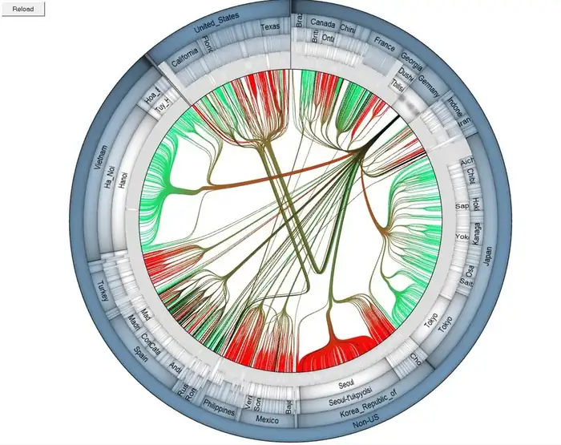

Where it came from
The idea circulated on the imageboard-adjacent forum Agora Road's Macintosh Cafe from around 2016, and was given its canonical form in a 2021 post usually attributed to a user calling himself IlluminatiPirate, titled “The Dead Internet Theory”.
Maps, diagrams and images



The essay's argument, in brief: the internet stopped being a place where humans talk to each other sometime around 2016–2017; what remains is algorithmic curation, bot traffic and, increasingly, machine-generated text and images, all optimised to farm attention and advertising. The human web, on this account, is a small residue inside a much larger automated one.
It is a conspiracy theory in form, but an unusual one — it arrives with a real phenomenon attached.
What is actually measured
Bots are a large share of traffic. Thales's Bad Bot Report (formerly Imperva) has measured automated traffic at roughly half of all internet traffic in recent years, with “bad bots” — scraping, credential stuffing, scalping, fraud — a substantial and rising fraction of that. This is industry telemetry rather than independent science, but it is consistent year after year and the methodology is published.
AI-generated content is a large and growing share of text. Studies of web text have found that a substantial portion of newly published pages carry signs of machine generation, and the proportion has risen sharply since 2022. Search engines and social platforms have responded with detection heuristics that are, by their own admission, unreliable.
Platforms are full of automated accounts. Independent investigations have repeatedly found large networks of inauthentic accounts — coordinated political messaging, engagement farming, spam — on every major platform.
So: bots are everywhere, machine text is everywhere, and much of what you scroll past was not written by a person who exists. That much is documented.
“Most of the internet” is not the same as “most of what you read”. Bot traffic counts include search engine crawlers, monitoring pings, API calls, and every automated request that never appears on a page a human sees. A majority of requests being automated is entirely compatible with a majority of reading being human.
The theory is unfalsifiable as usually stated. If real humans are the residue, any evidence of real humans — this page, your comment, a group chat — is dismissed as the simulation working correctly. That is the same structural problem as the Mandela Effect's timelines.
The dates do not work. The web was never a pristine human commons: spam, link farms, SEO mills, click farms and content farms are older than the theory. 2016 is when the theory's authors noticed, not when the change happened.
Why it spreads anyway
Because the experience behind it is real and widely shared. Feeds feel repetitive and synthetic. Search results return pages written to rank rather than to inform. Comment sections look like a language model warming up. The theory offers a total explanation for a genuine, ambient alienation — and, like all good conspiracy theories, it converts an unpleasant structural fact into a single hidden intention.
That is the same move as Tartaria, which turns “I don't recognise this architectural style” into “a wiped civilisation”, and the same move as the deep web file, which turns “there is unindexed content” into “a hidden market of horrors”.
What the honest version sounds like
Not “the internet is dead”, but: a growing share of what you encounter online was not produced by a person, was produced by a person paid to game a ranking system, or was produced by a person as raw material for an algorithm rather than for you.
That claim is defensible, checkable, and grim enough. It also has a practical consequence: the value of a source that names its author, shows its evidence and links its primary material goes up, not down. Which is the entire premise of this archive.
Sources for this page
- Wikipedia, “Dead Internet theory” — origin, Agora Road, 2021 essayen.wikipedia.org
- The Atlantic (2021), “The Dead Internet Theory”theatlantic.com
- Live Science, “What is the dead internet theory?”livescience.com
- Thales, Bad Bot Report — annual automated-traffic measurementthalesgroup.com
- The Verge, “AI is flooding the web with content”theverge.com
Open resources on this topic
- PapersOpen-access articles: DOAJ · PubMed Central · Internet Archive Scholar
- BooksPublic-domain and borrowable copies: Open Library · Project Gutenberg · Google Books · Internet Archive
Cite this page
Momin, S. (2026). The Dead Internet Theory. The Larger World Archive. https://drsamonline.github.io/LARGE_GLOBE/dead-internet.htmlMomin, Sohil. “The Dead Internet Theory.” The Larger World Archive, 2026, https://drsamonline.github.io/LARGE_GLOBE/dead-internet.html.Momin, Sohil. “The Dead Internet Theory.” The Larger World Archive, 2026. https://drsamonline.github.io/LARGE_GLOBE/dead-internet.html.@misc{the2026dead,
author = {Momin, Sohil},
title = {The Dead Internet Theory},
year = {2026},
howpublished = {The Larger World Archive},
url = {https://drsamonline.github.io/LARGE_GLOBE/dead-internet.html},
note = {Last reviewed 20 November 2026}
}Last reviewed 20 November 2026 · Corrections policy · this page is not peer reviewed